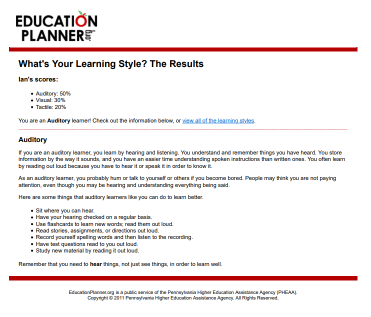

PDF version HERE
The learning style test said that I’m a natural listener. I’ve studied music for years, so I do have a trained ear, but I tend to read a lot of text for pleasure or research. I believe that I absorb information better via writing. I’m happy to communicate either by text or verbal conversations. When I’m in a group, I use the groups preferred communication method.